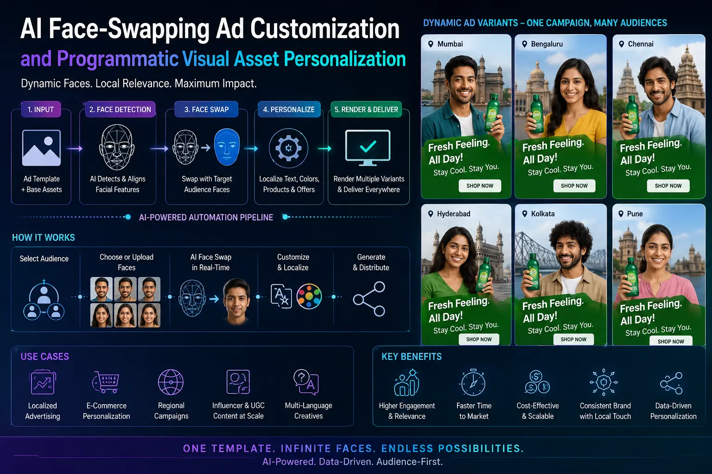
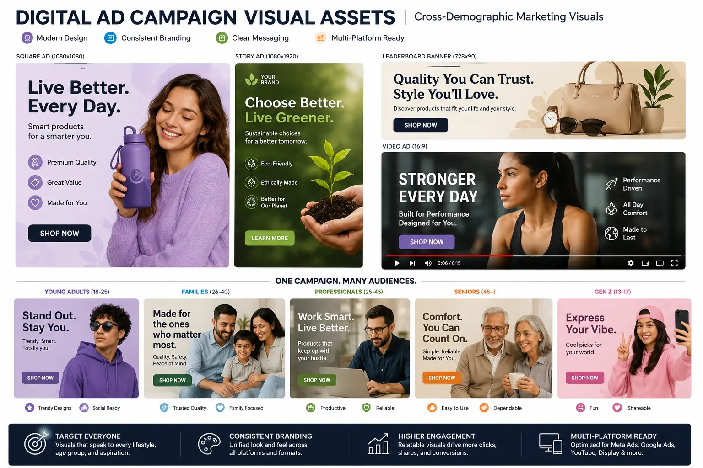

Utilizing Advanced AI Face-Swapping Infrastructure for Localized Digital Ad Personalization
The Localization Challenge in Performance Marketing
In programmatic advertising, relevance is the main driver of performance. When a user sees an ad featuring models who match their demographic and cultural background, click-through rates and brand trust increase. However, creating localized visual variations for different regional markets is a major logistical challenge. Shooting separate video campaigns with diverse talent databases for every state or target region is too expensive for most brand budgets.
Advanced AI models resolve this scalability issue. By utilizing **AI Face-Swapping Ad Customization** infrastructure, brands can swap faces in a master commercial video automatically. This approach allows marketing teams to scale their **Digital Ad Campaign Visual Assets** library, tailoring a single high-production shoot to multiple target markets.
By establishing a pipeline for **Programmatic Visual Asset Personalization**, advertisers can generate dozens of localized ad variations instantly. This automated workflow supports modern **performance marketing** demands, driving higher ROI across diverse audience segments.
How Programmatic Face-Swapping Operates
Building a localized visual personalization pipeline involves several technical steps:
- Master Shoot Design. The team shoots a high-production commercial featuring a model with clear angles, stable tracking points, and uniform studio lighting.
- Dynamic Face Swapping. Using advanced neural models, the AI maps new, licensed actor faces onto the master model, matching facial expressions and lighting shadows.
- Creative Asset Testing. Brands leverage these variations for **scaling ad creative testing variations**, feeding Meta and Google algorithms different demographic options to identify top performers.
- Compliance Checks. The production studio runs checks to ensure **advanced media tech compliance**, verifying actor rights and applying synthetic media markers before publishing.
Localized Visual Appeal
Generating **cross-demographic marketing visuals** allows brands to connect with different regional audiences, boosting ad CTR and engagement scores.
Massive Production Savings
Using **AI Face-Swapping Ad Customization** replaces the need for separate local shoots, reducing video production costs significantly.
High-Performance Variations
Building programmatic assets allows marketing teams to feed ad algorithms multiple talent variations, driving better **performance marketing** outcomes.
Next-Gen Commerce Assets
Applying dynamic swaps helps build engaging, personalized **Next-gen social commerce visuals** for direct conversion campaigns.

The Tech Compliance Playbook for Synthetic Media
Deploying face-swapped visuals requires strict adherence to legal and platform compliance rules to protect brand reputation:
- Licensed Actor Likenesses. Brands must use talent databases where actors have explicitly licensed their facial structures for commercial AI generation.
- Synthetic Media Disclosures. Platforms like Google and Meta require ads using synthetic media to include a clear disclosure, which can be managed via metadata watermarks.
- Original Model Consents. The model in the master shoot must sign a waiver allowing digital facial modifications in post-production.
AI Swap Infrastructure
- InsightFace models for precise face mapping.
- RoOP-based video processing tools.
- Custom Stable Diffusion models for asset generation.
- Adobe Firefly for compliant commercial fill.
Personalization Steps
- Produce high-quality master commercial assets.
- Select demographic target faces from actor libraries.
- Run batch neural swaps on key scenes.
- Embed metadata watermarks for tech compliance.
Campaign Visual Formats
- Programmatic video ad creative files.
- Localized social commerce carousels.
- **interactive ad campaign media** assets.
- Demographic-aligned landing page images.

Conclusion
AI face-swapping has transformed localization in performance advertising. By establishing a pipeline for **AI Face-Swapping Ad Customization** and **Programmatic Visual Asset Personalization**, brands can generate localized video variations instantly. This dynamic approach lowers production barriers, allowing creative teams to build **cross-demographic marketing visuals** that resonate with diverse audiences.
At **The PhD Ads**, we build high-performance visual assets for localized digital campaigns. Our team manages **Digital Ad Campaign Visual Assets** creation, handles **advanced media tech compliance** requirements, and deploys scalable variations to boost campaign conversion rates.
Key Topics
Scale Your Ad Personalization
At The PhD Ads, we use secure, compliant face-swapping tools and programmatic pipelines to localize your video ads, driving higher click-through rates across every target market.
Email: team@e2o.in